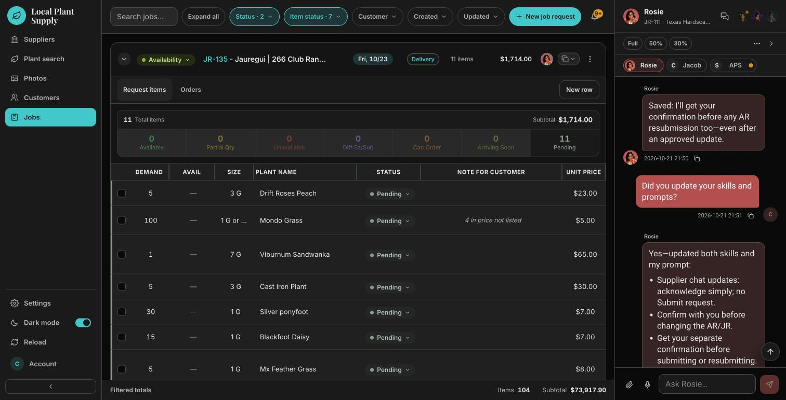
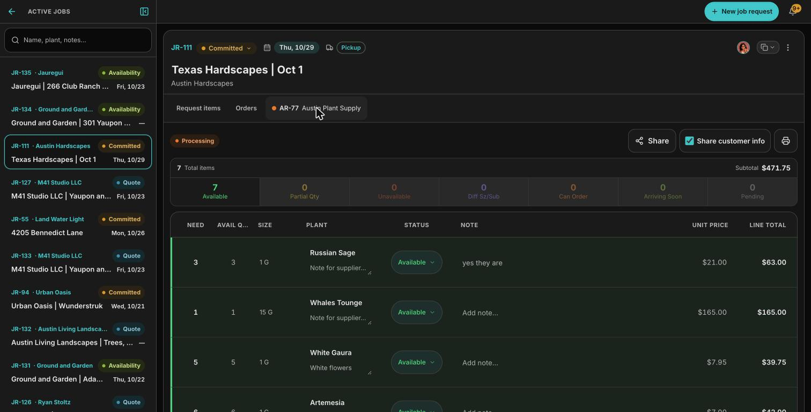
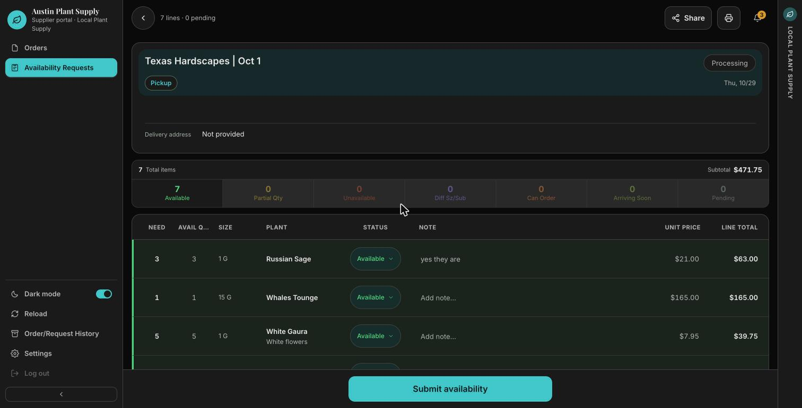
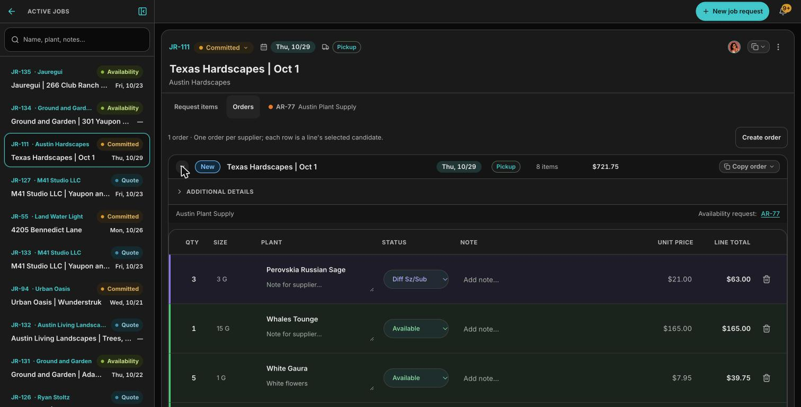

Quote to order, end to end
A customer sends a plant list. Rosie turns it into a job and prices it from the APS price list. With Chris's OK she asks the supplier what is really in stock, and once the customer commits she places the order. No email goes to a customer, no new question goes to a supplier, and no sale is closed without Chris saying yes.
In short
Every customer request at Local Plant Supply (LPS) becomes a job, shown in the app as JR-<number>. A job moves through five sales stages:
Quote → Availability → Committed → Won or Lost
- Quote. Every new job starts here. Rosie, the sales and orders agent, records each plant as a job line and prices it from the Austin Plant Supply (APS) price list. A quick quote stops at this point.
- Availability. A price list does not prove stock. With Chris's approval LPS sends the supplier an availability request (AR), and the supplier answers each line.
- Committed. When the customer commits, LPS creates a supplier order, and the job becomes Committed. The supplier then acknowledges the order and later marks it ready.
- Won / Lost. Only Chris closes a sale, and only when he says so in so many words.
The stages don't have to run in order. A customer who sends a committed order skips the quote and the availability request and goes straight to an order. A customer who accepts an earlier quote does the same.
Sources: harness/agents/rosie/system_prompts/1-agent.md, harness/agents/rosie/skills/agent/job-requests/SKILL.md, harness/agents/rosie/skills/agent/job-requests/artifacts/lifecycle.md, app/lib/job-requests.ts
Who does what
| Who | Role in the journey | How they take part |
|---|---|---|
Chris (owner, app role admin) | Makes every commercial decision: what to ask suppliers, which option fills a line, what is sent, and when a sale is won or lost. | Uses the LPS app (All jobs, the focused job page, the AR drawer, the Orders tab), and chats with Rosie in the app or on Telegram. |
| Rosie (sales and orders agent) | Runs the job: intake, pricing, candidates, quotes, availability requests, reading supplier answers, orders and order changes. | Writes to the database with a guarded tool, posts in the job's chat, drafts messages, and sends them only once they are approved. |
| Customer (a landscape professional, or a homeowner / retail buyer) | Sends the request and later accepts or declines. | Never signs in. Talks to LPS by email and messages. Has a customer record and one conversation that logs their contact across all of their jobs. Each job's own thread does the work. |
| Supplier: LPS Partner | Answers availability requests and acknowledges orders. | Signs in to the supplier portal (/partner/…) and chats with LPS there. |
| Supplier without a login | Answers one availability request. | Gets an emailed web link that opens just that request. The email needs Chris's approval. |
| Daisy (supplier agent) | Keeps the supplier and plant catalogue that pricing relies on. When a supplier email about a job or an order lands in her mailbox, she passes a pointer to Rosie. | Works behind the scenes. See Suppliers, plants and catalogue. |
Today LPS buys almost everything from one wholesale supplier, Austin Plant Supply (APS). APS is the default for pricing, availability requests and orders unless Chris names another supplier for a job. Rosie approaches other suppliers only when Chris allows it for that job.
Sources: harness/agents/rosie/system_prompts/1-agent.md ("Facts vs permission"), app/lib/orders.ts (isApsSupplier), harness/agents/rosie/skills/agent/supplier-coordination/artifacts/availability-requests.md
Five kinds of request
Rosie first decides what kind of request she is looking at. The kind decides which stages the job goes through.
| Chris or the customer sends… | What happens | Stages used |
|---|---|---|
| A price question ("how much is a 15 G Hesperaloe?") | Rosie answers it without creating a job. | None |
| A plant list, screenshot, plan or email to price or source | New job, lines, candidates and prices for every row. Rosie posts the job link and any gaps. An availability request follows if Chris approves the scope, and a quote only if someone asks for one. | Quote → Availability → (Committed) |
| "Quick quote" | New job, lines, prices, quote, then stop without an availability request. | Quote |
| An order that is already committed | New job, lines and candidates (prices given by the customer are kept, gaps are filled from APS), then an order straight from the job lines, skipping the quote and the AR. | Quote → Committed |
| Acceptance of an existing quote | The existing job goes straight to an order on the accepted terms. | → Committed |
If a customer later accepts a quick quote, that accepted scope becomes an order in the same way.
Sources: harness/agents/rosie/skills/agent/job-requests/SKILL.md ("The usual flows"), harness/agents/rosie/skills/agent/job-requests/artifacts/intake.md
The stages at a glance
| # | Step | Who acts | Job stage afterwards | Approval gate |
|---|---|---|---|---|
| 1 | Intake: the request becomes a job | Rosie (Chris may start it with New job request) | Quote | None. Rosie loads first and asks later. |
| 2 | Pricing from the APS price list | Rosie | Quote | None for pricing. Picking a non-exact option needs Chris. |
| 3 | Quote (optional) and quick quote | Rosie drafts; Chris approves the send | Quote | Chris approves the exact email before it goes to the customer. |
| 4 | Availability request to the supplier | Rosie prepares; Chris approves; app or Rosie publishes | Availability once actually delivered | Chris approves the scope, and the email for a supplier without a login. |
| 5 | Supplier answers | Supplier (or Chris on their behalf) | unchanged | Only a submitted answer counts. |
| 6 | Chris reviews the answers | Rosie alerts; Chris decides | unchanged | Chris picks any non-obvious option and confirms corrections. |
| 7 | Customer confirmation | Customer, relayed by Chris or Rosie | unchanged | Confirmation means a real commitment from the customer. |
| 8 | Supplier order | Chris in the app, or Rosie | Committed | The customer's commitment (Chris relaying it counts). |
| 9 | Fulfillment | Supplier acknowledges and marks ready (Chris can also mark it ready) | Committed | None. Pickup / Delivery and the date come from the job, and suppliers can't change them. |
| 10 | Won / Lost | Chris decides; Rosie records | Won / Lost | Chris's explicit word. Silence is not a lost sale. |
Sources: app/lib/job-requests.ts, app/lib/availability.ts, app/lib/orders.ts, harness/agents/rosie/skills/agent/job-requests/artifacts/lifecycle.md
Step by step
1. Intake: the request becomes a job
A request reaches Rosie as text, a screenshot, a plan or an email. Chris may type it in the app's chat panel or on Telegram, or it may arrive from a customer by email. Chris can also press New job request in the app. That opens a fresh job page with Rosie's chat ready, and Rosie writes the record there.
- Load first, ask later. Rosie saves the job, its lines and prices straight away and posts the
JR-link, because Chris edits faster in the app than he answers questions. Only then does she ask one batch of questions that really block progress. - Customer. Rosie matches an existing customer by email, then phone, then name or company. If the customer is new and known, she creates the customer record. If the customer is unknown, the job stays unlinked and any clue goes in the internal note. The app has no "new customer" form on purpose.
- Job name. The name is
Customer or Company | Slug, for exampleExample Landscaping | Oak Grove. The slug is the site, address, project or PO, and the whole name is at most 160 characters. One list with several project headings is one job. - Lines. Each requested plant becomes one job line with the customer's quantity (Demand) and size. When no quantity is given, Rosie uses 1 and asks "How many?".
- Dates and method. Rosie captures the customer's EDD (expected delivery / installation date) and Pickup / Delivery. If she can't find them she asks, and "Unknown" is a valid answer.

/jobs), expanded on its Request items: each requested plant is one line with its Demand and size, and Avail stays blank until a supplier answers. The status strip counts lines by availability, and with no answers in yet all 11 are Pending.How intake is stored
- New job request calls POST
/api/requests/reserve(signed-in admin only, enforced byproxy.ts), which runsreserve_job_request_id(). That reserves an id from the sequence without writing a row. The UI then opens/jobs?jr=<id>with Rosie on threadjr-<id>. The reservation is kept insessionStorage['lps.jobs.intake.v1'], so a retry reuses the same id, and an abandoned start just leaves a gap in the numbering. - The app never inserts a job. Rosie inserts
job_requestswithOVERRIDING SYSTEM VALUEand the reserved id, afterSET app.actor TO 'rosie'.statusstarts asquoted, which is also the database default, even for committed intake. - Columns written at intake include
customer_id,name,note_for_customer,expected_install_date(EDD) andfulfillment_method(pickup|delivery| NULL). Lines go injob_request_items, which holds only the customer's ask:name,size,demanded_quantityandnote_internal. A line's price, total, status, available quantity and customer note are its selected candidate's (migration 0131 dropped those line columns). customer_idis not writable from the app (WRITABLE.job_requestsinapp/lib/queries.ts), because customer mapping is a find-or-create decision.- Every insert or update of a job or line is recorded in the
job_request_changelogtable by triggers (migration 0055). The actor isapp.actorwhen the writer sets it, otherwise the database role, and the app shows it as, for example, "Rosie", "This app" or "An agent script".
2. Pricing from the APS price list
Each job line gets one or more candidates. A candidate is one supplier's plant, at one size and one price. Every line starts with a default candidate, the customer's original plant and size at APS. The database creates it with the line, unpriced and already selected, so every line always has a selection. Listed alternatives (other sizes, other names for the same plant) become more candidates on the same line.
Rosie works out the price in this order and uses the first one that applies:
- a price the customer already accepted, or one supplied with a committed order;
- a price or size Chris gives her;
- the exact APS listing (same plant, cultivar and size);
- one of Chris's standing price rules;
- a listing of the same plant under another name.
Rosie puts the price on the default. When one of these fits, the default is an exact match and simply stays selected, with no question asked. When nothing fits, the default stays unpriced, which means "price not found". The line's price stays blank and Rosie reports the gap. She never invents a price. A price of $0 is a real price, used only when Chris gives one.
How candidates and selection work
- Candidates live in
candidates:supplier_id,job_request_item_id,name,size,description(for example5 G Shumard Oak),is_original,unit_price(NULL = not priced; 0 is a real $0 price, migration 0143) andmapped_inventory_id. Rosie never seeds an answer status, available quantity or supplier note. - The trigger
create_job_line_defaultcreates each line's default when the line is inserted: APS (supplier 1),is_original, the line's name and size, unpriced, and set as bothdefault_candidate_idandselected_candidate_id. Rosie updates it with the price, listing and description and never inserts a second one. The default can't be hidden, deactivated, deleted or demoted while its line exists (migration 0130). - On an exact match Rosie also adds 2–3 similar listings from the same supplier as hidden substitute options (
hide_from_lps = true). They stay out of Chris's Candidates column and are offered only in the supplier's Diff Sz/Sub dialog. When there is no exact match, Rosie shows only the 3–4 nearest listed alternatives and hides the rest the same way. - Selecting runs
select_candidate, which only repointsselected_candidate_id(and unhides a hidden candidate, migration 0152). Nothing is copied: thejob_linesview reads the selected candidate live for the size, price, available quantity (capped at demand, blank while unanswered), status and customer note. A line itself keeps only the customer's ask: name, requested size, demand and internal note. On the job page selecting is a drag onto the line's Selected cell. Dragging back to Candidates (unselect_candidate), or deactivating the selected candidate, falls back to the default. - Price lookups use the
aps-pricehelper (read-only). After a real lookup Rosie records the workflow eventpricing_fetched, which never changes the stage. - When the app itself seeds an original candidate (while creating an AR), it prices it from
search_inventoryin literal mode for that supplier and size. It takes the price only if every matching row agrees, and otherwise leaves it unpriced (NULL).
3. Quote (optional) and quick quote
A quote is made only when someone asks for one. A job in the Quote stage doesn't need a quote document, and ordinary requests can go straight to an availability request.
- In the app, the job card's Copy quote menu offers four templates: Text Quote, HTML Quote, Text Availability and HTML Availability. Every line needs a quantity and a unit price before a quote can be copied.
- From Rosie, a copy-ready quote is built from the saved lines. A plant or size the customer didn't ask for appears only when that option is selected.
- Sending it to the customer is a separate step. Rosie shows Chris the exact recipient, subject and text in his original chat and sends only what he approves. Quotes use only the customer-facing notes and never name the supplier.
- Quick quote: the job is created, priced and quoted, and then the work stops. No availability request is offered.
How quotes are built and recorded
- App:
app/components/workspace/copy-quote-menu.tsxcallsjobRequestToHtmlQuote(request, {includeAvailabilityStatus})inapp/lib/job-request-html-quote.ts. The quoted quantity is 0 for Unavailable lines, else Avail, else Demand. Errors: "Add at least one priced line before copying an HTML quote." and "Every line needs a quantity and unit price before copying a quote." - Rosie:
quote-generation/scripts/quote-job <jobId> [--no-totals] [--status]reads saved rows and does the maths. It never writes or sends anything. - Sending uses Rosie's mailbox (
gws gmail +send/+reply) from the job's thread, after approval, and the send is logged in the customer's conversation. Only once the customer actually has it does Rosie recordquote_shared. A draft doesn't count.
4. Availability request to the supplier
An availability request (AR) asks one supplier about one job's lines. For each line it asks about the selected option. Every line has one: the customer's original plant and size, unless Chris picked another. The All jobs dialog always asks the original.
- Chris approves the scope. Rosie asks in the chat where Chris made the request, then prepares the AR as a private Draft the supplier can't see. A quote is not needed first, and blank prices don't block an approved AR.
- Publishing. Publishing turns the Draft into New and makes it visible to the supplier. Rosie publishes after Chris's yes. Chris can publish himself in the app with the Publish button on a draft, or create and send one in a single step from the All jobs Send availability request dialog.
- Delivery. An LPS Partner sees the AR in their portal at once. A supplier without a login gets a private web link, which Rosie sends in an HTML email only after Chris approves that exact email.
- The job moves to Availability only when the AR actually reaches the supplier. That happens automatically when a Partner AR is published, and Rosie records it once the email to a non-partner has gone out.
- One AR per job and supplier. A later ask to the same supplier for the same job is added to the existing AR. Lines added to a draft go out when it is published. A Processing, Completed or closed AR must be reopened as New on purpose first. For a Processing or Completed AR the app asks for this as one Reopen and add step; a closed one has to be reopened on its own first. Nothing reopens an AR by itself. In the app, Chris adds a line by dropping its candidate onto that supplier's AR tab on the job page.
- Customer details stay private by default. The supplier sees the customer's contact and delivery address only when sharing is switched on for that AR.
- Alternatives: asking a supplier about a different plant or size, or about its price, needs Chris's separate yes. Approving a quote doesn't cover it.

/jobs?jr=<id>), here AR-77 for Austin Plant Supply. The Share customer info toggle is the per-AR switch that lets the supplier see the customer's contact and delivery details.How ARs are created and published
- Table
availability_requests(onejob_request_ideach). Its lines are the asked candidates (candidates.availability_request_id). Statuses:draft,new,processing,submitted(shown as Completed) andclosed. create_availability_requestalways inserts adraft.send_availability_requestpublishes (Draft → New). It requires at least one active candidate, and mints apublic_tokenfor a non-Partner supplier.- The app's POST
/api/availability-requests(All jobs dialog) creates or extends the AR and publishes it immediately. It lists all active suppliers, Partners and non-Partners. The draft Publish button sends PATCH/api/availability-requests/:id{status:'new'}. - The insert trigger
availability_requests_one_per_job_supplier(functionguard_one_ar_per_job_supplier, migration 0128) refuses a second AR for the same job and supplier: "JR-… already has AR-… with this supplier; add candidates to it (reopen it if closed)". add_candidates_to_availability_requestrefuses a Processing, Completed or closed AR untilreopen_availability_requesthas moved it back tonew(with a fresh public link for a non-Partner). Since migration 0130 no trigger returns an AR to New: LPS edits to answers or published content keep the AR's status.- The trigger
advance_linked_job_on_partner_requestrecordsavailability_sentwhen a Partner AR leaves Draft. For non-partners Rosie records it withrecord_job_workflow_eventafter a confirmed send. The event moves a job only fromquotedtoavailability, and never backwards. - Rosie's own instructions still say "only you can send". The code lets Chris publish from the app as well, and the code is the source of truth here.
5. Supplier answers
The supplier answers each line in the portal, on the public link page, or by phone or email, in which case Chris types the answer in for them.
| Answer | Means |
|---|---|
| Available | The asked plant and size, in the full quantity. |
| Partial Qty | The asked plant and size, but fewer than requested. The supplier enters how many. |
| Unavailable | Can't supply it. The quantity becomes 0 and the price is kept. |
| Diff Sz/Sub | Can't supply the asked one, but offers a named substitute: another option on the line, or something the supplier types in. The asked option is recorded as Unavailable, and the substitute carries the Diff Sz/Sub answer with its own price and quantity. |
| Can Order | Not in stock, but the supplier can get it. The supplier adds an ETA in the note. |
| Arriving Soon | Stock in transit. The supplier notes when it lands and how many. |
| Pending | Not answered yet. |
In the answer picker, Can Order and Arriving Soon are one option, and a small dialog asks which. Prices are entered or corrected in the line's own Price cell.
The AR moves from New to Processing as soon as the first answer is saved, and to Completed when the supplier presses Submit. A supplier editing after submitting returns it to Processing until they submit again (the button then reads Re-Submit).

/partner/1/requests/77. It is in Processing because answers are saved, and it becomes Completed only when the supplier presses Submit availability.How answers are stored and announced
- Answers are written to the candidate by
answer_availability_request(supplier or public link) oredit_availability_request(admin on the supplier's behalf). Answer keys:status,available_quantity,unit_price,note_from_supplier,offered_candidate_idandoffer_description(offer_unit_priceandoffer_quantityare still accepted but ignored). Changing the status never changes the price. A supplier answer moves the AR toprocessing; an LPS edit keeps its status. - A substitute is stored on the asked row as
unavailable(quantity 0) withoffered_candidate_id. The substitute candidate is stored asdiff_size_subat the line's demand, made visible to LPS and linked to the same AR, but it isn't a row of its own there. The supplier's price, quantity and note on the asked row go to the substitute. A typed substitute is a new placeholder candidate that Rosie enriches after submission. - Status sets quantity: Available = the line's demand, Unavailable = 0. Pending is stored as NULL; changing an answer back to Pending clears the available quantity and keeps the price and notes. It does not count as an answer.
- A new supplier reply (
note_from_supplier) clears LPS's customer-note override on that candidate (migration 0132), so the customer note starts as the reply and LPS overrides it from there. - After each write the app calls
notifySupplierEvent, which posts to Rosie'ssupplier-eventswebhook.availability_updated(a save) is acknowledged but never delivered.availability_submittedwakes Rosie on the AR's job thread,jr-<job_request_id>.
6. Chris reviews the answers
Job lines read their selected option live, so a supplier's answer on a selected option shows on its line as soon as it is saved. When the AR is submitted, and the job is still in Quote or Availability, the database does two more things. A selected option answered Unavailable with a substitute hands the line's selection to that substitute, and the supplier's other alternatives on the AR's lines are hidden. Rosie then posts one short alert in Chris's chat. It lists the lines that changed and any answers on options that are not selected, for example a different size the supplier offered, so Chris can drag one in if he wants it.
- Rosie never selects an option because of an answer, even if it is the only or the cheapest one. Choosing is Chris's job. The database's switch to a substitute is the one automatic exception.
- If an answer contradicts the supplier's own note (for example "Available" with a note saying only 3), the note is taken as the truth. Rosie proposes a correction, and changes it only after Chris confirms.
- Nothing goes to the customer at this point. Updating a note is not sending.
- On Committed or closed jobs a submission switches nothing and hides nothing. Rosie just reports the answer.
What the database does on submission
- The trigger
availability_requests_apply_selectedrunsapply_submitted_candidates()on active jobs with statusquotedoravailability. A line whose selected candidate on that AR was answeredunavailablewith a substitute since the previous submission is repointed to the substitute. Thenhide_submitted_alternativessetshide_from_lpson the supplier's other non-original candidates on the AR's lines, asked or not. The line's default and selection, the supplier's originals and the substitutes they offer stay visible (migrations 0130 and 0132). - Nothing is copied on submission. The customer note a line shows is its selected candidate's
note_for_customeroverride if set, otherwise the supplier's reply, and a new reply clears the override (migration 0132). - This happens without an approval step. Every other line waits for Chris to drag an option to Selected.
- Line status: the selected candidate's status as stored (
job_lines.candidate_status, migrations 0137 and 0138), with nothing derived. Unanswered (NULL) reads Pending,can_orderis namedneed_to_orderin the line vocabulary, and every other answer reads as stored. An asked option answered Unavailable reads Unavailable even when it offers a substitute; only the substitute itself (diff_size_sub) reads Diff Sz/Sub. An alternative Chris dragged in reads its own answer, so one answered Available reads Available.
7. Customer confirmation
The customer accepts the quote or confirms the order, usually by email or message. Chris relaying "they've confirmed" counts. Rosie relays the exact lines and quantities accepted, with the evidence, to the job's conversation. Partial acceptance or changed terms are resolved first.
8. The supplier order
LPS creates an order once the customer has committed. An order belongs to one job and one supplier (APS by default), and each of its rows is a copy of one job line's selected option. It starts as New, and the job moves to Committed.
- In the app, Chris opens the job's Orders tab and presses Create order. He picks the supplier, and the dialog lists the job's lines whose selected option is that supplier's and not yet on an order, all ticked. He unticks any line the customer hasn't committed to and saves. The quantity is what the line shows available, or else its Qty.
- Additional details. A new order also carries Additional details for the supplier, such as the customer, delivery address and contacts. The dialog prefills them from the job, and Chris can edit them before saving.
- One order per job and supplier. If the job already has an open order with that supplier, the ticked lines are added to it instead of starting a new one. There is no AR-backed or direct kind any more: committed intake and an accepted quote order from the job lines in the same way.
- After it is placed Chris can still edit, add or remove rows on the order. A line whose selected option is already on an order can't be ordered again.
- Pickup / Delivery and the date are the job's. An order has no fulfillment method or date of its own; it shows the job's Pickup / Delivery and EDD.
- Rosie orders exactly the lines committed, never orders a line twice, and never creates an AR just to make an order possible.

How orders are created
- POST
/api/ordersis admin only.parseCreateOrder(app/lib/orders.ts) takes{jobRequestId, supplierId, jobRequestItemIds, additionalDetails}(1 to 500 distinct line ids) and rejectsfulfillmentMethod,noteForSupplierornoteForCustomer("Set pickup/delivery on the job and send additionalDetails"). There is no customer-confirmed flag: the customer's commitment is a working rule. - It runs the single
create_order(job, supplier, line ids, additional_details)(migrations 0146, 0149 and 0151). The job row lock (FOR UPDATE) serialises orders for the job. It reuses the job's open order with that supplier (unique indexorders_one_open_per_job_supplier) or inserts a new one withorders.job_request_id. - For each line it copies the selected candidate into one
order_itemsrow: name, size, price, status (NULL →pending,can_order→need_to_order), LPS's ask and the supplier's reply, linked by the uniqueorder_items.candidate_id. The quantity is the line's available quantity capped at demand, else its demand. Errors include "… is selected from another supplier", "… is already on order O-…" and "Set a quantity for … before ordering". There are no allocations (order_item_job_request_itemswas dropped in 0146) and no demand or stock limits. orders.additional_detailsis an ordered JSON list of{"field", "value"}pairs (1 to 50, checked byis_order_details). The function then runsUPDATE job_requests SET status='committed' … WHERE status IN ('quoted','availability').record_job_workflow_event(migration 0093) still accepts a legacycustomer_confirmedevent that would also move a job to Committed, but Rosie's current instructions don't use it.- A Can Order answer appears as Need to Order on the order line.
9. Fulfillment
- Supplier acknowledges. In the portal the supplier presses Acknowledge Received. The dialog asks for nothing, and the order moves to Processing. The supplier can add their own reply note on the order and on each row.
- Supplier marks ready. Mark as Ready moves it to Order Ready, with no date to enter. Chris can also press Mark as Ready on the job's Orders tab.
- Pickup or delivery and the target date come from the job. Suppliers can't change them.
Orders only move forward: New → Processing → Order Ready. When an order changes materially after it is placed (a plant, size, quantity or price, Pickup / Delivery, or the target date), Rosie adds one dated bullet to the order's Change log, such as - 10/22: Wax myrtle 15 G qty 10 → 12, and tells the supplier. A changed contact or address is corrected in the Additional details instead, and events such as an acknowledgement are never logged. Factual change notices like this need no fresh approval. The job stays Committed throughout.
How order confirmation works
- Both steps run
update_partner_order, through PATCH/api/partner/:id/orders/:orderIdfor the supplier, or the admin PATCH/api/orders/:orderIdfor Chris. The app accepts onlyprocessingororder_ready, with no date (migration 0149 droppedorders.fulfillment_dateandorders.fulfillment_method). Confirming stampsconfirmation_date, and backward moves or skipping Processing raise "Orders move from New to Processing to Order Ready". - The patch keys are
status,additionalDetails,changeLogandnoteFromSupplier.orders.change_log(migration 0150) holds the material changes as markdown bullets,- MM/DD: change. The partner route returns 403 foradditionalDetailsorchangeLog, which only the admin route may write, and 400 for any other field, such as a fulfillment method or date. - On Chris's own job Orders tab, a New order has no Acknowledge button, because it renders only in the supplier view. An admin session can open a Partner's portal pages, and the admin route accepts the same status moves.
- Supplier changes in the portal notify Rosie on the order's job thread,
jr-<job_request_id>, with the eventsorder_updated(status or the supplier's note) andorder_status_saved(line status changes). - Chris can also share an order as a read-only public link (
/public/orders/<token>), switched on and off with PATCH/api/orders/:orderId{isPublic}.
10. Won / Lost
Closing a sale is only on Chris's explicit word. A customer going quiet is not a lost sale.
- Rosie closes the order as won or lost. A closed order's outcome can't be changed.
- Closing the job's last open order also closes the job: Won if any of its orders was won, otherwise Lost. Lines that were never ordered don't hold the job open.
- A job lost before any order is closed directly.
- Closing a job closes its availability requests and switches off their public links. Reopening a job does not reopen its ARs: each AR has to be reopened on purpose, and a new link published if one is needed.
How closing works
close_order(orderId, 'closed_won' | 'closed_lost')is service-only and has no app route, so orders are closed by Rosie. It locks the order's job (orders.job_request_id), and when no active order on the job is still New, Processing or Order Ready, the job becomesclosed_wonif any of its orders was won andclosed_lostotherwise (migration 0146).- The admin status pill on each All jobs card can set any of the five stages directly (PATCH
/api/rows). "Committed only by order creation" and "Won/Lost only on Chris's word" are working rules, not locks in the software. - The trigger function
close_ar_on_job_status_changesets every AR of a Won, Lost, archived or inactive job toclosedand clearspublic_token. Deleting a job deletes everything of it: its lines and their candidates, its ARs and its orders (close_orphaned_availability_on_job_delete, migrations 0139, 0141 and 0146). Otherwise ARs are never deleted: a delete or truncate on its own is refused by triggers (migration 0127), and only the job delete is let through.
Sources: harness/agents/rosie/skills/agent/job-requests/artifacts/{intake,pricing,supplier-responses,orders,lifecycle}.md, harness/agents/rosie/skills/agent/supplier-coordination/artifacts/{availability-requests,responses,email}.md, harness/agents/rosie/skills/agent/customer-coordination/SKILL.md, harness/agents/rosie/skills/agent/quote-generation/SKILL.md, app/lib/availability-queries.ts, app/lib/orders.ts, app/components/workspace/orders.tsx, app/components/workspace/copy-quote-menu.tsx, harness/agents/daisy/migrations/0127_ar_publish_and_retention.sql, 0128_one_ar_per_job_supplier.sql, 0130_job_lines_from_selected_candidate.sql, 0132_answer_followups.sql, 0137_job_line_candidate_status.sql, 0139_drop_candidate_demand.sql, 0143_zero_price_is_a_price.sql, 0146_order_per_job_supplier.sql, 0149_order_additional_details.sql, 0150_order_change_log.sql, 0151_order_details_json.sql
Every approval gate
These are the points where work stops until the right person says yes.
| Gate | Who must say yes | What exactly is approved |
|---|---|---|
| Send an availability request | Chris | The scope: which lines go to which supplier. He may also ask Rosie to send an existing draft. |
| Ask a supplier about an alternative plant, size or its price | Chris | That specific alternative. Approving a quote doesn't cover it. |
| Approach a supplier other than APS | Chris | That supplier, for that job. |
| Share customer contact or delivery details with a supplier | Chris (asked once, saved as the supplier's preference) | The supplier's sharing preference. Private until he answers. |
| Email a customer (including a quote) | Chris | The exact draft: recipient, subject, full text and attachments. A real change needs a new yes. |
| Email a supplier (including a public AR link) | Chris | The exact draft. |
| Fill a line with any option other than the exact match | Chris (by dragging, by direction, or by a standing rule such as "several sizes asked → the cheapest priced") | That option for that line. |
| Correct a supplier answer that conflicts with its note | Chris | The proposed correction. |
| Apply a supplier's chat or email answer to an AR or job | Chris, in the job's chat | That proposed update. A change to a selection, price or quantity needs that scope in his yes. |
| Submit or re-submit an AR on the supplier's behalf | Chris, in the job's chat | That submission, separately from any answer update. |
| Create an order | The customer (Chris relaying it counts) | The exact lines committed. |
| Pickup / Delivery and the date on an order | LPS, on the job | The order reads the job's values. Suppliers can't change them. |
| Delete or deactivate anything | Chris | That specific record. |
| Close a job or order as Won / Lost | Chris | The outcome, in his own words. |
Sources: harness/agents/rosie/system_prompts/1-agent.md ("What needs Chris's yes"), harness/agents/rosie/skills/agent/message-routing/artifacts/approval.md, harness/agents/rosie/skills/agent/supplier-coordination/artifacts/availability-requests.md, app/app/api/partner/[id]/orders/[orderId]/route.ts
What Rosie may and may not do without Chris
Rosie may, on her own
- Create the job, its lines and candidates.
- Price lines from the APS price list and Chris's price rules.
- Select the exact-match option for a line at intake.
- Record alternatives as candidates, without asking which one.
- Write notes for the right audience and record milestones such as "pricing fetched".
- Prepare drafts: an AR draft, a quote, or an email for approval.
- Acknowledge a supplier's chat answer with a simple thanks and relay it to Chris.
- Tidy a substitute the supplier typed in (split name and size, keep the supplier's price).
- Send factual order-change notices and routine portal clarifications to suppliers.
- Create an order from a request the customer has already committed to.
Rosie may not, without Chris's yes
- Publish or send an availability request beyond the scope he approved.
- Ask a supplier about an alternative or its price.
- Email a customer or supplier anything he hasn't approved word for word.
- Pick any option for a line other than the exact match.
- Select an option just because a supplier answered it.
- Correct a supplier's answer, or enter one given in chat or by email.
- Create an order without the customer's commitment.
- Delete or deactivate any record.
- Close a job or order as Won or Lost.
- Submit or re-submit an AR for a supplier. She never asks the supplier to press Submit instead.
Some rules in Rosie's instructions have no exceptions. Rosie never names the supplier to a customer. She never invents a name, price, quantity, date or stock level, so unknown values stay blank. Internal notes are for Chris and LPS only and never reach a customer. Every email to a customer goes out only after Chris approves that exact draft.
How these limits are enforced
- Most limits live in Rosie's deployment prompt (
1-agent.md) and skills. They are agent rules, not database locks. - Some are hard limits in software. Rosie's SQL tool blocks
DELETE,DROP,ALTERand similar statements, so removals go through dedicated database functions. Suppliers can't write an order's Additional details or Change log (403), and orders have no Pickup / Delivery of their own to change. ARs can't be deleted on their own (database guard). There is one AR per job and supplier (trigger), one open order per job and supplier, and one order row per candidate (database constraints). - Every Rosie write sets
app.actor = 'rosie', so the job change history shows which changes were hers. - Supplier events tell Rosie that something happened, never that something is approved. Her event rules forbid setting a selection from an event or treating one as customer acceptance.
Sources: harness/agents/rosie/system_prompts/1-agent.md, harness/agents/rosie/system_prompts/plugin-supplier-events.md, harness/agents/rosie/skills/agent/job-requests/artifacts/supplier-responses.md, harness/agents/rosie/scripts/agent/supabase/query
Ground rules along the way
| Rule | Why it matters |
|---|---|
| Notes have audiences. Note for customer goes on quotes. Internal note holds the customer's requirements and open points and is never shown to the customer. Note for supplier and note from supplier carry the ask and the reply. | Prevents internal context or supplier details reaching a customer. |
| One AR per job and supplier. Later asks are added to it. | The supplier sees one tidy request per job. |
| ARs are never deleted on their own, only with their job. To withdraw one, move it back to Draft. That hides it from the supplier and switches off its link. | Supplier answers are kept as history. |
| Nothing reopens an AR by itself. Edits keep a published AR's status. Asking more of a supplier who has answered needs an explicit reopen to New. | A small correction isn't mistaken for a new question, and a real new ask is deliberate. |
| The ask is a snapshot. Editing a line's plant name or size changes only the customer's ask, never an option. Price, status, available-quantity and customer-note edits on a line go to its selected option. | The supplier answers a stable question, and an option never carries another plant's price. |
| An order's date and Pickup / Delivery are the job's. The order shows the job's EDD and method. | There is one place to change them, and the supplier sees the same values LPS does. |
| Reopening a job doesn't reopen its ARs. | Closed history stays closed until someone reopens it on purpose. |
Sources: harness/agents/rosie/skills/agent/job-requests/artifacts/notes.md, docs/supabase-schema.md, harness/agents/daisy/migrations/0127_ar_publish_and_retention.sql, 0130_job_lines_from_selected_candidate.sql, 0144_line_edits_leave_candidates.sql, 0149_order_additional_details.sql
Technical details
For engineers: what moves each status, in one place.
Status changes and what triggers them
| Change | Triggered by | Where |
|---|---|---|
Job inserted as quoted | Rosie's insert with a reserved id | reserve_job_request_id() (0072); column default quoted (0092) |
Job quoted → availability | Workflow event availability_sent: automatic for Partner ARs leaving Draft, recorded by Rosie for non-partner emails | record_job_workflow_event (0093); trigger advance_linked_job_on_partner_request (0127) |
Job → committed | Order creation, when the order's job is in Quote or Availability | create_order (0146, 0151) |
Job → closed_won / closed_lost | Admin status pill, Rosie's guarded update (a job lost before any order), or automatic when the job's last open order closes (Won if any order was won) | PATCH /api/rows; close_order |
AR inserted as draft | Any AR creation | create_availability_request |
AR draft → new | Publish (app button, All jobs dialog, or Rosie) | send_availability_request |
AR → processing | A supplier answer is saved | answer_availability_request |
AR → submitted (Completed) | Supplier Submit (portal or public link), or admin sets submitted | Supplier: answer_availability_request(…, p_submit => true) or submit_availability_request_note. Admin: PATCH /api/availability-requests/:id {status:'submitted'} |
AR → new again | Only an explicit reopen of a Processing, Completed or closed AR: the app's Reopen and add or status pill, or Rosie when told. Edits never reopen an AR (the reset triggers were dropped in 0130). | reopen_availability_request; PATCH /api/availability-requests/:id {status:'new'} |
AR → draft (withdrawn) | Admin moves a published AR back to Draft | PATCH /api/availability-requests/:id {status:'draft'}; guard_ar_public_link clears the link |
AR → closed | Admin, or the job closes or is deactivated | PATCH /api/availability-requests/:id; close_ar_on_job_status_change |
| AR deleted | Only when its job is deleted | close_orphaned_availability_on_job_delete (0139) |
Order inserted as new | Admin Orders tab or Rosie, unless the job already has an open order with that supplier | POST /api/orders; create_order |
Order new → processing → order_ready | Supplier (Acknowledge Received, then Mark as Ready); Chris can also Mark as Ready | update_partner_order |
Order → closed_won / closed_lost | Rosie on Chris's word | close_order (no app route) |
Workflow events and agent wake-ups
| Signal | Effect |
|---|---|
pricing_fetched | Recorded after a price lookup; the stage stays the same. |
quote_shared | Recorded when the customer actually has the quote; the stage stays the same. |
availability_sent | Moves Quote → Availability. Never moves a job backwards or reopens a closed one. |
customer_confirmed, supplier_confirmed | Legacy events the function still accepts. customer_confirmed would move Quote or Availability → Committed, and supplier_confirmed changes nothing. Rosie's instructions use neither. |
availability_submitted (webhook) | Wakes Rosie on the AR's job thread, jr-<job_request_id>, where she alerts Chris. |
availability_updated (webhook) | Acknowledged but not delivered, so saved answers don't wake Rosie. |
order_updated, order_status_saved (webhook) | Tell Rosie about supplier order changes, on the order's job thread. |
Screens refresh through data-free {type:"jobs"} invalidations relayed from database changes. See Chat and live updates.
Conversations (threads) involved
jr-<id>: one job, with all of its supplier and customer contact. Lines, candidates, prices, notes, ARs, orders and stage. AR and order events from suppliers land here (the app passesthreadId: jr-<job_request_id>), and approved customer and supplier emails are sent from here.- The customer's conversation (
customers.rosie_thread_id) and the supplier's conversation (suppliers.rosie_thread_id): shared transcripts across all of that party's jobs. The job thread logs its messages into them; a supplier message written from a job thread is tagged with the job, so it shows on the job's supplier tab and in the portal. Their own threads (customer-<slug>,supplier-<slug>) only route what the party sends, including portal chat, to the right job or to main, and do no job work. main: coordination, Telegram sends, questions not about a job, and anything unclear.
The conversation where Chris asked (OriginThreadId) receives the approval request, and the job's thread does the send.
Sources: harness/agents/daisy/migrations/0093_*.sql, 0127_ar_publish_and_retention.sql, 0130_job_lines_from_selected_candidate.sql, 0139_drop_candidate_demand.sql, 0146_order_per_job_supplier.sql, app/lib/notify-supplier-events.ts, app/lib/availability-queries.ts, app/lib/order-queries.ts, harness/plugins/supplier-events/index.ts, app/lib/job-events.ts, harness/agents/rosie/system_prompts/1-agent.md ("Threads")
Related pages
Status lifecycles
Every status for jobs, ARs, orders and lines, and how each one changes.
Jobs and job lines
The job page, line table, candidates and selection.
Availability requests
Drafts, publishing, answers and public links in depth.
Supplier orders
Creating orders, additional details, confirmation and closing.
Supplier portal and public links
What suppliers see and do.
Meet the agents
Rosie, Daisy, Lily and Nova.
Glossary
EDD, candidate, Diff Sz/Sub and other terms.
Diagrams: job lifecycle, AR lifecycle, order lifecycle, line status lifecycle, AR round trip, order confirmation.